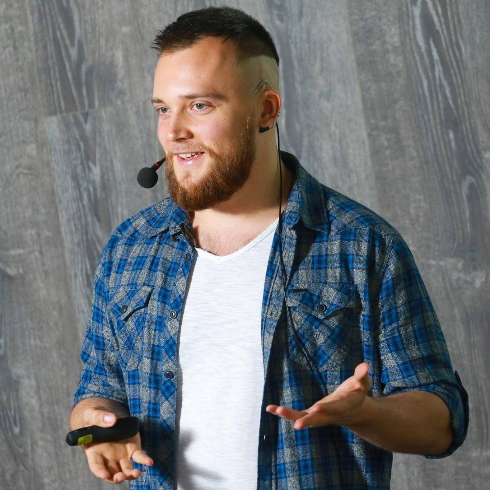

Всем привет!
- Меня зовут Саша
- Front-end разработчик в Astound commerce
- Кредо: "Действия громче чем слова"
- Люблю челенджи
- Хобби: социальные танцы

Agenda
Зачем тестировать визуальные регресии
Почему BacksopJs
Настройка
DEMO
Зачем?
¯_| ಠ ∧ ಠ |_/¯
- У сайта много страниц и состояний для разных устройств
- Большая команда и много новичков
- Что-то поправил Back-end разработчик
- Несколько файлов CSS на один сайт
- Один CSS файл на несколько сайтов ( и такое бывает) (o_O)
- Вы ведете курсы Front-End разработчиков
Критерии выбора
- Окупится ли польза от изучения технологии?
- Какое у нее будущее?
- Насколько легко и быстро внедрить её в проэкт?
Какие варианты?
- PhantomCSS
- BackstopJS
- Selenium
- Gemini
- BrowserStack
BackstopJS
- Latest commit 25/10/2017
- Inital commit 15/10/2014
- Last version 3.0.31
- 730 downloads in the last day
- 4,537 downloads in the last week
- 22,137 downloads in the last month
- 16 open pull requests on GitHub
PhantomCSS
- Latest commit 11/10/2017
- Inital commit 6/11/2012
- Last version 1.2.0
- 402 downloads in the last day
- 2,315 downloads in the last week
- 9,838 downloads in the last month
- One open pull request on GitHub
BackstopJS
Catch CSS curve balls.
CLI инструмент для автоматизации тестирования визуальных регресий.
- Chrome Headless, Phantom and Slimer
- Resemble JS
- ChromyJS and CasperJS
Возможности
- Можно настроить за пять минут
- Тестирование отдельных блоков
- Удаление или скрытие элементов со страницы
- Детальные отчеты в браузере и CLI
- CI интеграция с JUnit отчетами
- Возможность использовать глобально или интегрировать с npm и Gulp
Установка
$ npm install -g backstopjs - установка
$ backstop init - создание базового конфига
Использование
$ backstop reference - создание эталонной картинки
$ backstop test - запуск теста
$ backstop approve - замена эталона тестируемой картинкой
backstop.json
{ "id": "prod_test", "viewports": [...] "scenarios": [...] "paths": {...} "engine": "chrome",//- "phantomjs", "slimerjs" ....
backstop.json
"onBeforeScript": "chromy/onBefore.js", "onReadyScript": "chromy/onReady.js", "report": ["browser"], //- "CI" "debugWindow": false}
onBeforeScript, onReadyScript
module.exports = function(chromy, scenario, vp) { // chromy – Chromy instance // scenario object // vp – viewport obj };
Viewports
"viewports": [ { "name": "desktop_mdpi", "width": 1280, "height": 800 }, ...]
Scenarios
"scenarios": [ { "label": "test_page", "url": "website.com", //-- "url": "..local_folder/index.html", "referenceUrl": "stage.website.com", ...
Scenarios
"selectors": [ "#menu", ".hero" "header" ], ...
Scenarios
"hideSelectors": [".hide_on_test"], "removeSelectors": [".remove_on_test"], "delay": 500, "misMatchThreshold" : 0.1, }]
BackstopJS
- Быстро настраивается
- Тестирование отдельных блоков
- Выполнение сценариев пользователя через Casper JS или ChromyJS
- CI интеграция
Fork me on GitHub